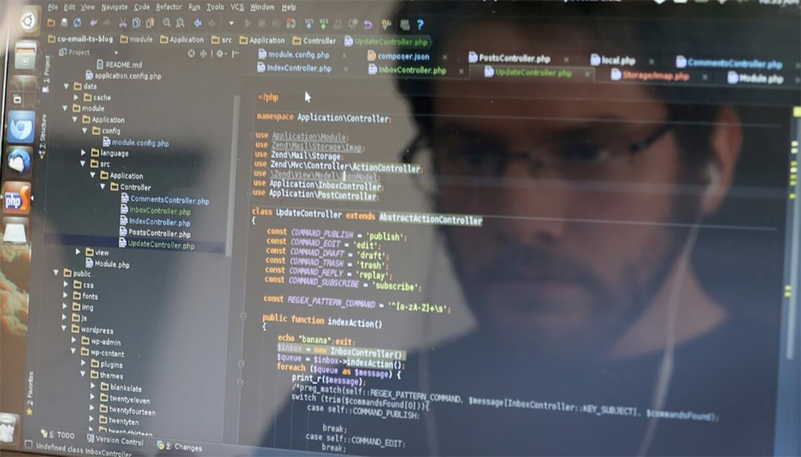

A aula de Design de Software tinha como objetivo estabelecer o contato dos alunos com a programação em python partindo do mais básico possível uma vez que era uma matéria completamente nova. .

O Inspermon foi o segundo projeto realizado na matéria e além de um resultado muito satisfatório também possuía um nível de complexidade interessante para quem não havia tido muito contato com programação.
O projeto consistia em realizar uma série de objetivos quem estavam no plano do projeto, da maneira que o aluno quisesse fazer, assim possuindo alguns limitadores mas já abrindo mais as opções para realizar o projeto, tendo inclusive um objetivo que era de surpreender o professor.
A programação do projeto foi algo que demandou tempo, pois muitas coisas podiam ser colocadas no projeto e nem todas eram convenientes, adicionando assim um trabalho em entender a melhor maneira de realizar o projeto e tentar surpreender o professor.